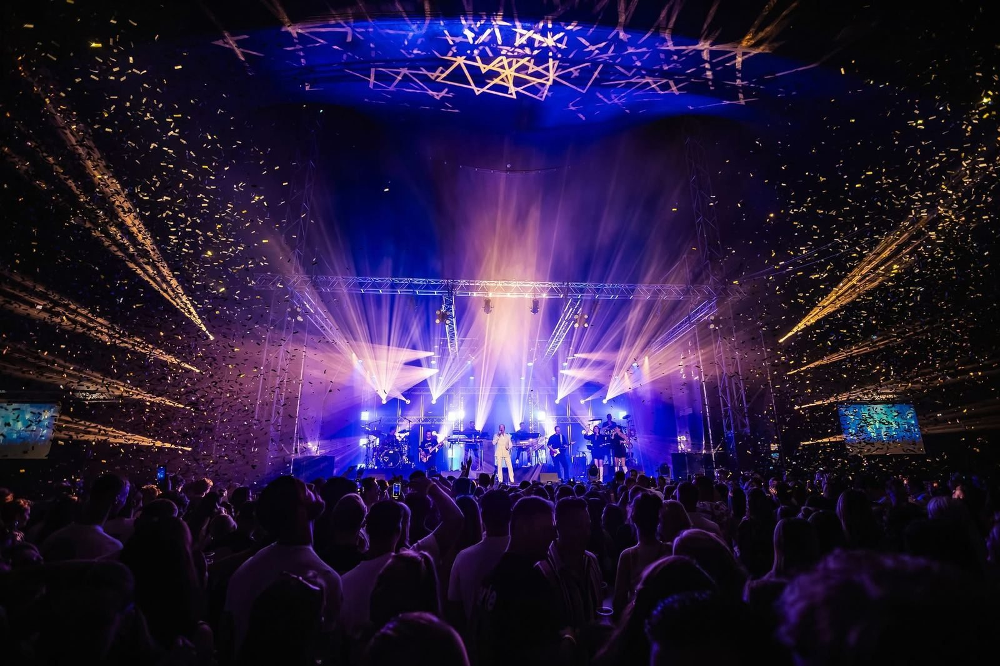
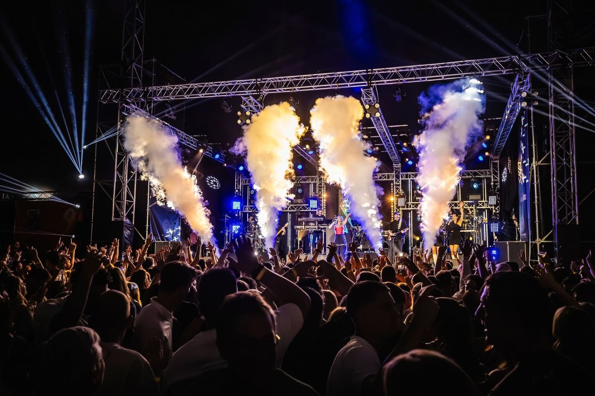
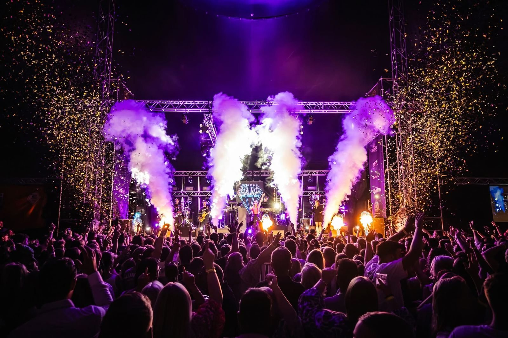
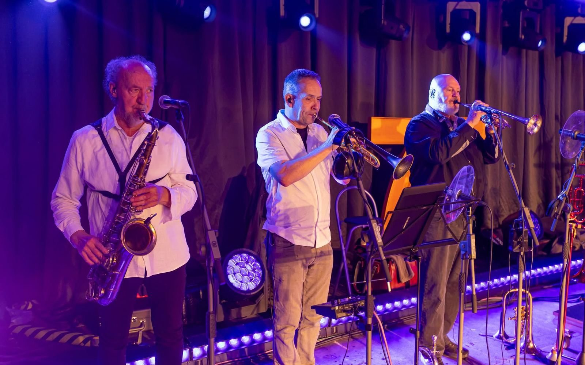
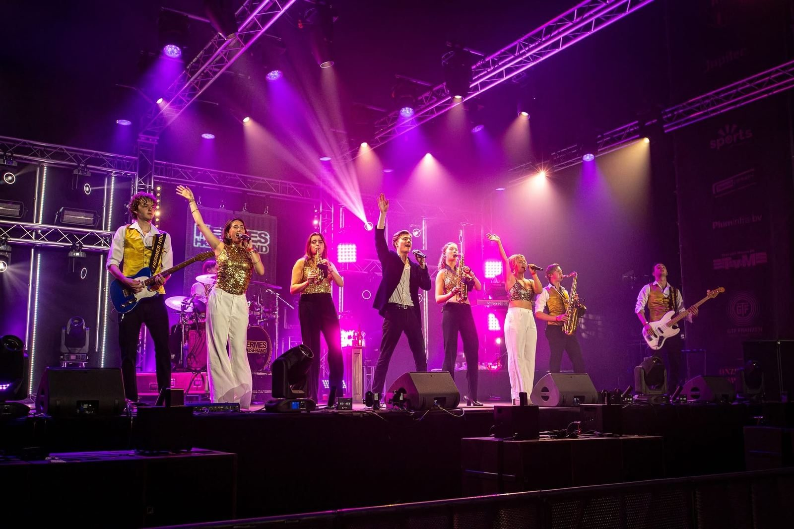
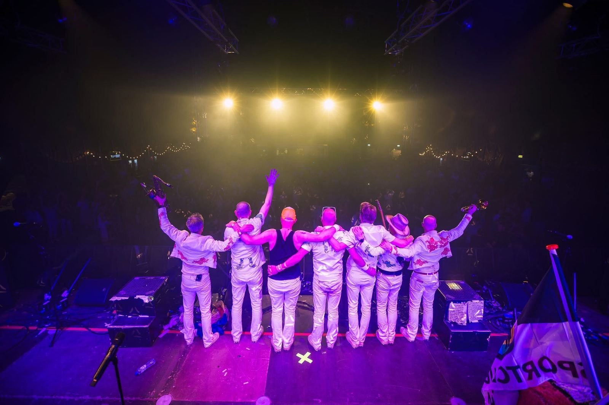

GTF Franzen · Familiebedrijf uit Bocholtz
Jouw event.
Onze familie
staat erachter.
Geluid, licht, stroom en complete producties voor festivals, dorpsfeesten, bruiloften, verenigingen en bedrijven. Al meer dan 50 jaar, met één aanspreekpunt van begin tot eind.
01Waarom één partner
Vijf leveranciers?
Of één familie
die alles regelt.
Zo gaat het vaak
- Een partij voor geluid, een voor licht, een voor stroom
- Iedereen een eigen planning en eigen wensen
- Op de dag zelf weet niemand wie verantwoordelijk is
- Valt er iets uit, dan begint het bellen
Zo gaat het met Franzen
- Alle techniek uit één hand, op elkaar afgestemd
- Eén vast aanspreekpunt, van eerste gesprek tot afbouw
- Korte lijnen, eerlijk advies en geen gedoe
- Mensen die er staan als het telt, want het is ook onze naam
02Wat we doen
Alles voor een event
dat klopt.

Geluid
Van heldere speech tot een volle festivalwei.
02
Licht
Sfeer waar het moet, spektakel waar het kan.
03
Omroep & 100V
Waar we al generaties bekend om staan.
04
Stroom & infra
Geen stroom, geen show. Wij regelen het.
05
Complete productie
Eén partner, van eerste idee tot laatste kabel.
03Voor elk event
Wat ga jij
organiseren?

Een festival dat staat als een huis.
Meerdere podia, wisselende artiesten en duizenden bezoekers. We plannen de techniek van alle stages op elkaar af en houden het overzicht, van het eerste overleg tot de laatste act.
Dit regelen wij voor je
- Geluid en monitoring per podium
- Lichtshow en effecten met MATRIX E.I.L.
- Aggregaten en stroomverdeling
- Omroep over het hele terrein
- Technische crew op locatie

Het hele dorp op de been.
Kermis, carnaval, schuttersfeest of een avond in de feesttent. We kennen de regio, de verenigingen en de locaties, en weten wat er nodig is om er een avond van te maken waar nog lang over gepraat wordt.
Dit regelen wij voor je
- Tentgeluid en sfeerlicht
- Omroep voor optochten
- Stroom voor tent, bar en kraampjes
- Podium voor bands en zaalartiesten
- Snel schakelen als het programma verandert

Jullie dag, zonder zorgen over techniek.
Van de ceremonie en speeches tot de band en de dansvloer. Wij zorgen dat alles klinkt en er mooi uitziet, zodat jullie alleen maar hoeven te genieten.
Dit regelen wij voor je
- Microfoons voor ceremonie en speeches
- Geluid voor band of dj
- Sfeerverlichting en dansvloer
- Opbouw voordat de gasten komen
- Eén vast aanspreekpunt

Professioneel, strak en op tijd.
Een presentatie, congres, personeelsfeest of productlancering. De techniek moet gewoon werken en de boodschap moet aankomen. Wij zorgen voor heldere spraak, passend licht en een soepel verloop.
Dit regelen wij voor je
- Spraak en presentatiegeluid
- Podium- en sfeerverlichting
- Draadloze microfoons
- Technische regie tijdens het programma
- Discreet opbouwen en afbouwen

Een jubileum om nooit te vergeten.
Honderd jaar sportclub, een lustrum of een bijzonder concert. Voor zo’n moment wil je techniek die het verhaal van je vereniging groot maakt. Daar denken we graag in mee, ook met een beperkt budget.
Dit regelen wij voor je
- Volledige productie van tent of zaal
- Show met licht, effecten en visuals
- Geluid voor live acts
- Stroom en infrastructuur
- Meedenken over planning en budget
Betrouwbaar, voor publieke momenten.
Herdenkingen, intochten, markten en evenementen in de openbare ruimte. Met onze ervaring in omroep- en 100V-systemen zorgen we dat iedereen op het terrein het goed hoort.
Dit regelen wij voor je
- Omroepinstallaties en 100V
- Spraak bij ceremonies en herdenkingen
- Stroom op locatie
- Advies over de opzet vooraf
- Ervaring in NL, BE en DE
04Ons verhaal
Geen bedrijf met
een familie, maar
een familie met een vak.
Het begon met een winkel in Bocholtz en speakers die we zelf bouwden. Meer dan 50 jaar later staan we nog steeds met dezelfde mentaliteit op elk event: vakmanschap, betrokkenheid en aandacht voor elk detail.
Lees ons verhaal- Het begin
Een winkel en een passie voor techniek
GTF Franzen begon als witgoedzaak in Bocholtz. Daarnaast werd er volop geknutseld aan geluid, met speakers die we zelf bouwden.
- Rond 1960
De verhuur gaat van start
Rond 1960 kreeg de verhuur van geluid vorm. Dat werd de basis van het bedrijf zoals je het nu kent.
- Decennia lang
Bekend om omroep en 100V
Optochten, sportvelden en evenementen in de hele regio. Met onze omroepinstallaties en 100V-systemen bouwden we een naam op voor betrouwbaarheid.
- Groeien
Licht, stroom en complete producties
Het aanbod groeide mee met de events. Licht, aggregaten en complete producties kwamen erbij, voor festivals, bruiloften, verenigingen en bedrijven.
- Vandaag
De volgende generatie
Met MATRIX E.I.L. voor licht en visuals brengt de volgende generatie Franzen nieuwe energie in het bedrijf. Dezelfde betrokkenheid, met de techniek van nu.
05Projecten
Waar we
trots op zijn.


06Waar je op kunt rekenen
Wat een familiebedrijf
anders maakt.
Je belt met de familie
Geen callcenter of ticketnummer. Je spreekt de mensen die je event ook echt neerzetten.
Maatwerk, geen pakket
We kijken naar wat jouw event in de praktijk nodig heeft, niet naar wat er op papier staat.
Onze naam staat erop
Elk event draagt de naam Franzen. Daarom laten we pas los als alles goed staat.
Voor de lange termijn
We bouwen liever een band op dan dat we één klus doen. Jouw volgende editie wordt daardoor alleen maar beter.
07Veelgestelde vragen
Goed om
te weten.
Kunnen jullie ook alleen geluid of alleen licht leveren?
Zeker. Je kunt ons inschakelen voor één onderdeel. Maar de meeste klanten merken dat het veel rust geeft als alle techniek uit één hand komt, met één aanspreekpunt.
In welke regio werken jullie?
We komen uit Bocholtz in Zuid-Limburg en werken in heel Nederland, België en Duitsland.
Hoe ver van tevoren moet ik boeken?
Hoe eerder, hoe beter, zeker voor de zomer en het carnavalsseizoen. Maar bel ook gerust als het kort dag is, dan kijken we wat er kan.
Wat kost het?
Elk event is anders, dus we werken altijd met een offerte op maat. Die is vrijblijvend. Vertel ons wat je van plan bent, dan denken we mee over wat past bij je budget.
Komen jullie eerst kijken op de locatie?
Bij grotere events komen we graag langs om de locatie te bekijken. Zo weten we precies waar stroom, podium en speakers moeten komen en voorkomen we verrassingen op de dag zelf.
Zorgen jullie ook voor stroom?
Ja. We leveren aggregaten en verzorgen de stroomverdeling, ook voor bars, foodtrucks en andere partijen op je terrein.
Vertel ons wat je
van plan bent.
Een kort berichtje is genoeg. We denken vrijblijvend mee en sturen je een voorstel op maat.